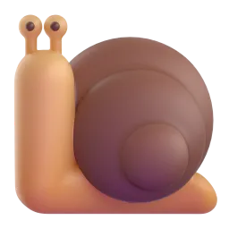
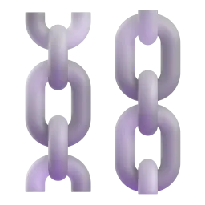
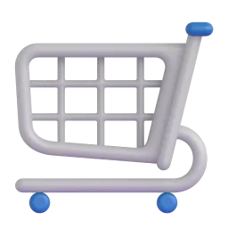
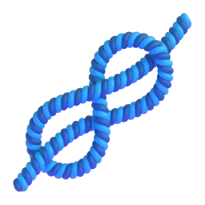
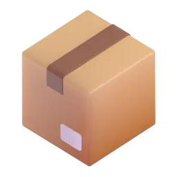
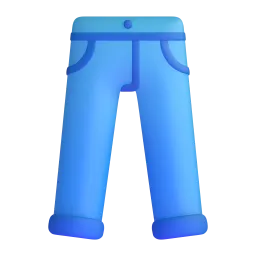
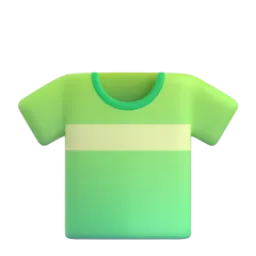
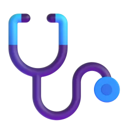
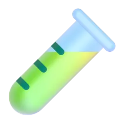
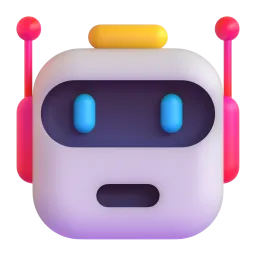

“Se eu dobrar a velocidade da máquina que não é gargalo, quanto a fábrica vende a mais?”

Nada. A fábrica continua no ritmo do gargalo. Só sobra mais estoque parado na frente dele.
Um físico olhando para a fábrica
Eliyahu M. Goldratt levou o raciocínio da física para a programação da produção. Em vinte anos, a ideia saiu do software e virou filosofia de gestão.

OPT
Software que programa a fábrica pelo recurso gargalo.

The Goal
A Meta: o romance que populariza a TOC.
The Race
Apresenta o Tambor-Pulmão-Corda.

The Haystack Syndrome
Contabilidade de ganhos e decisões pelo gargalo.

It's Not Luck
Processos de raciocínio: a TOC além da fábrica.

Critical Chain
A TOC aplicada à gestão de projetos.
A meta é ganhar dinheiro hoje e no futuro
Ganho
Dinheiro que entra pelas vendas, menos o material. Produzir sem vender não conta.
Inventário
Dinheiro preso no sistema em coisas que se pretende vender.
Despesa operacional
O que se gasta para transformar inventário em ganho.

Uma decisão é boa se aumenta T ou reduz I e OE sem derrubar o ganho.
Os 5 passos de focalização

Física
máquina, pessoas, material ou espaço que não dão conta da demanda.

De mercado
a fábrica consegue produzir mais do que o mercado compra.

Política
regras e métricas, como eficiência local ou lote grande, que travam o fluxo. É a mais comum.
Tambor, pulmão e corda
Como programar a fábrica inteira a partir de um único ponto: a restrição.
Tambor
A restrição. A programação dela dita o ritmo de toda a fábrica.

Pulmão
Uma proteção em tempo antes da restrição, para ela nunca parar por falta de material.

Corda
Libera matéria-prima só no ritmo do tambor e evita estoque acumulado no meio da linha.
Resultado: menos estoque em processo, lead time menor e prazos cumpridos, sem precisar de todo mundo ocupado o tempo todo.
Duas abordagens que se completam

Sistema Toyota
- Ataca os 7 desperdícios em toda a fábrica.
- Busca fluxo contínuo e produção puxada.
- Melhoria contínua em todos os postos.

Teoria das Restrições
- Ataca primeiro a restrição: foco cirúrgico.
- Melhorar fora dela não melhora o sistema.
- Diz onde aplicar a melhoria.
O que a TOC melhora em cada critério

Rapidez
Menos estoque em processo, filas menores: o pedido atravessa a fábrica mais rápido.
Confiabilidade
O pulmão protege a restrição de imprevistos, e o prazo prometido é cumprido.
Custo
Investe só onde aumenta o ganho, com menos inventário parado.

Flexibilidade
Com pouco estoque na linha, mudar o mix ou a ordem dos pedidos fica mais fácil.

Qualidade
Inspecionar antes da restrição: uma peça ruim ali é tempo perdido pela fábrica toda.
O DBR num sistema produtivo
Pulmão
LiberaçãoEstação 1PulmãoEstação 4
Na prática
Uma confecção, um ambulatório, um projeto e a dinâmica com a turma.
Qual peça merece o minuto da costura?
A costura é o gargalo. O mix certo vem do ganho por minuto de gargalo, não da margem de cada peça.
| Produto | Preço | Material | Ganho (T) | Min. na costura | T por minuto de gargalo |
|---|---|---|---|---|---|
 Calça | R$ 140 | R$ 50 | R$ 90 | 25 | R$ 3,60 |
 Vestido melhor Vestido melhor | R$ 120 | R$ 50 | R$ 70 | 12 | R$ 5,83 |
 Camisa | R$ 80 | R$ 30 | R$ 50 | 10 | R$ 5,00 |
Pela margem, a calça parece a melhor. Pelo gargalo, a ordem é vestido, camisa, calça. Números ilustrativos.
Os 5 passos no fluxo de pacientes
 Recepção
Recepção
Triagem
Exames Alta
AltaIdentificar
A fila cresce na porta do consultório: o médico é o gargalo.
Explorar
O médico só faz consulta; prontuário e triagem chegam prontos.
Subordinar
Recepção e triagem chamam no ritmo do consultório, com agendamento escalonado.
Elevar
Mais um turno ou mais um médico no horário de pico.
Repetir
A fila passou para os exames? Esse é o novo gargalo.
Agora é a vez da turma: Confraria do Gargalo
Um jogo de bruxas sobre os 5 passos, no celular. No próximo slide tem o QR Code e o telão ao vivo.

Escaneie o QR
O link abre direto no celular: escolha o nome da bruxa e jogue.
Ache o gargalo
Identifique, explore, subordine e eleve a restrição. Ela pode mudar de lugar!

Dispute o placar
Quem entrega mais poções sobe no placar ao vivo.
Como usamos IA neste trabalho

Ferramentas
Claude: programação do jogo, do simulador e dos slides. ChatGPT: revisão crítica do conteúdo e do jogo.

Prompts (exemplos)
“Dá para criar um modo específico para sala de aula, pra nossa apresentação?” · “Avalie o jogo: ele ensina os 5 passos da TOC corretamente?”
Validação
Conferimos com a bibliografia, jogamos e testamos o jogo, pedimos revisão cruzada a outra IA e corrigimos o que ela apontou.